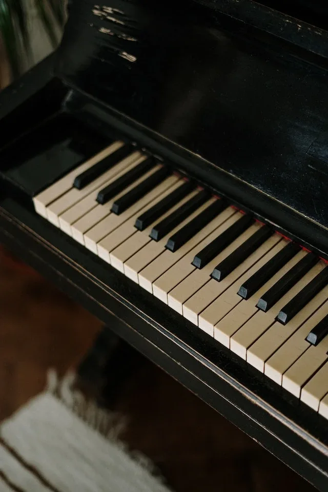

O Mnie
Kompozycje
Współpraca
Poszukujesz zdolnego
pianisty z pasją?
Szymon Śledziński
Jestem pianistą z pasją do fortepianu. Już od
dziesiątego roku życia
moje palce biegają po klawiaturze, a dźwięki, które gram, dodają radości i energii kazdej otwartej duszy.
Jako
pianista rozrywkowy
, dostarczam wielu niezapomnianych chwil podczas występów, przenosząc publiczność do magicznego swiata muzyki. Moje umiejętności
interpretacyjne i wyczucie rytmu
pozwalają mi tworzyć
unikalne aranżacje popularnych utworów
, które przywołują uśmiech na twarzach słuchaczy i prowadzą ich w niezwykłą muzyczną podróż.
Posłuchaj

Niezależny Artysta
Nie tylko odtwarzam utwory znakomitych kompozytorów, ale także
kreuję swoje własne, unikatowe kompozycje
. Moja muzyka jest wyrazem mojej oryginalności i kreatywności. Zainspirowany zarówno
klasyką
, jak i
dźwiękami elektroniki
, tworzę dzieła, które przenikają granice gatunków i wprowadzają słuchaczy w nowe, nieodkryte dźwiękowe krajobrazy.
Zainteresowany Współpracą?
Czy marzysz o wyjątkowej oprawie muzycznej dla swojego wydarzenia? Czy szukasz kompozytora lub pianisty, który potrafi wprowadzić magiczną atmosferę do Twojego projektu? Jeśli tak, to właśnie znalazłeś odpowiedniego partnera muzycznego! Działam w miastach takich jak
Stalowa Wola
oraz
Rzeszów
i okolice Napisz do mnie na
sledzinskiszymonabs@gmail.com
lub wyślij wiadomość na numer
505 730 087
i umów się ze mną na rozmowę